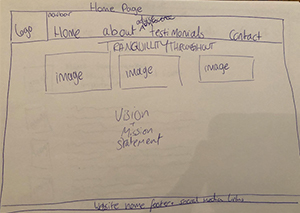
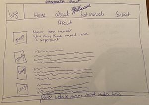
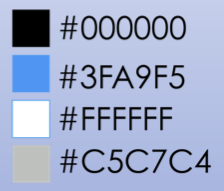

The Design of our Website
Our designs for this website was to be simple, clean, and nice to look at. Our target group is for people that suffer with mental health issues and people that could get easily overwhelmed. We wanted to create a calming feel when looking at the sight with nothing that contrasts too dramatic or that could be overly vibrant. We kept the same font throughout the website to ensure consistency but made sure there was a difference between sub-headers and paragraphs using italics.
The Flow of Our Website

The design of the website navigation was to ensure that it was easy to use. We opted for a drop down menu as our website turned out to have a lot of information pages, which cluttered the navbar. We ensured that the main menu dropdown menu at the top left was always visible and you could switch between pages very easily.
The Wireframes


Here we have the home and the about Wireframes. The home orginally had the three images, but during the design of our website: we decided to put all the information regarding mental health onto the homepage as it deemed one of the more important things to have. Then we also created an image which had our brand vision on the image.
For the about page, we moved the mission statement onto the about page as it seemed more fitting to be there. It would tell what our mission statement is and then inform about the team.
We also swapped from having a navbar to a dropdown menu. During our interviews for the Lean Canvas, we found that people with axniety got overwhelmed by all the information at the top. The decision was made to put all the nav options into a drop down menu.
